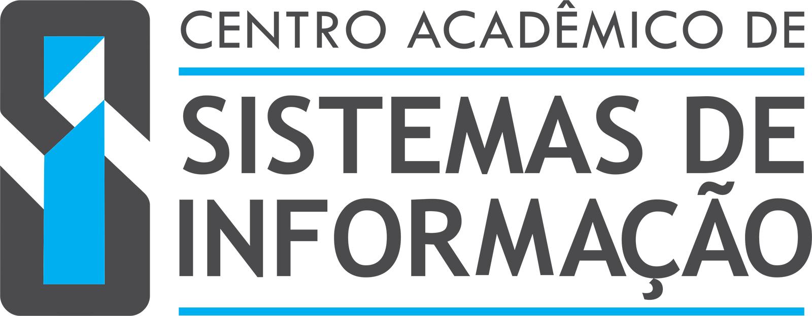
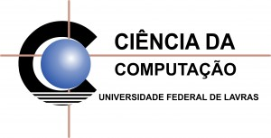
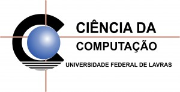
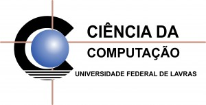

Organização
Apoio
 

A II Maratona de Programação da UFLA é um evento realizado no Departamento de Ciência da Computação com o intuito de motivar e preparar os alunos a participarem de competições estaduais e nacionais de programação. A maratona é direcionada à alunos de graduação dos cursos de Ciência da Computação, Sistemas de Informação e Engenharia de Controle e Automação da UFLA, porém se você for aluno de qualquer outro curso da instituição, também poderá participar.
A participação é feita em equipes de 3 alunos. Cada equipe tentará resolver durante as 5 horas da maratona o maior número possível dos 10 ou mais problemas que são entregues no início da competição.
“Os competidores do time devem colaborar para descobrir os problemas mais fáceis, projetar os testes, e construir as soluções que sejam aprovadas pelos juízes da competição. Alguns problemas requerem apenas compreensão, outros conhecimento de técnicas mais sofisticadas, e alguns podem ser realmente muito difíceis de serem resolvidos. Desta forma, a competição estimula nos alunos a criatividade, a capacidade de trabalho em equipe, a busca de novas soluções de software e a habilidade de resolver problemas sob pressão.”
As inscrições devem ser feitas online, através do formulário com o cadastro da equipe e são confirmadas somente após o pagameto da taxa.
Nós solicitamos uma pequena contribuição para que seja possível realizar o evento. Com essa arrecadação conseguimos premiar os primeiros colocados. Fique ligado para o último dia do pagamento!
Sim! Todos os participantes da equipe que comparecerem na maratona /*até o final!*/ receberão certificado de participação que poderá ser utilizado para contagem de horas extras-curriculares e abono de faltas.
A equipe vencedora além de ganhar a premição no final da maratona, irá receber uma ajuda de custo para poder participar de campeonatos regionais e nacionais! Se, e somente se, todos os membros do time forem estudantes regurlamente matriculados na UFLA.
Na competição você ira desenvolver uma série de habilidades que são extremente úteis não apenas para o seu curso de graduação, mas também para a sua vida profissional, pois muitas empresas consideram a participação em maratonas um importante diferencial. E além de se divertir! ;)
Entre em contato conosco através de alguma das nossas formas de contato, com o CACC ou CASI, será um prazer poder ajudar!
Não se esqueça de ler as regras e funcionamento da Maratona!
Centro Acadêmico de Ciência da Computação
Prédio do Centro de Convivência, sala 12 - 2º piso
Universidade Federal de Lavras
(35) 3829-1042
cacc@comp.ufla.br
Centro Acadêmico de Sistemas de Informação
Prédio do Centro de Convivência, sala 8 - 2º piso
Universidade Federal de Lavras
(35) 3829-1048
casi.dcc@gmail.com
